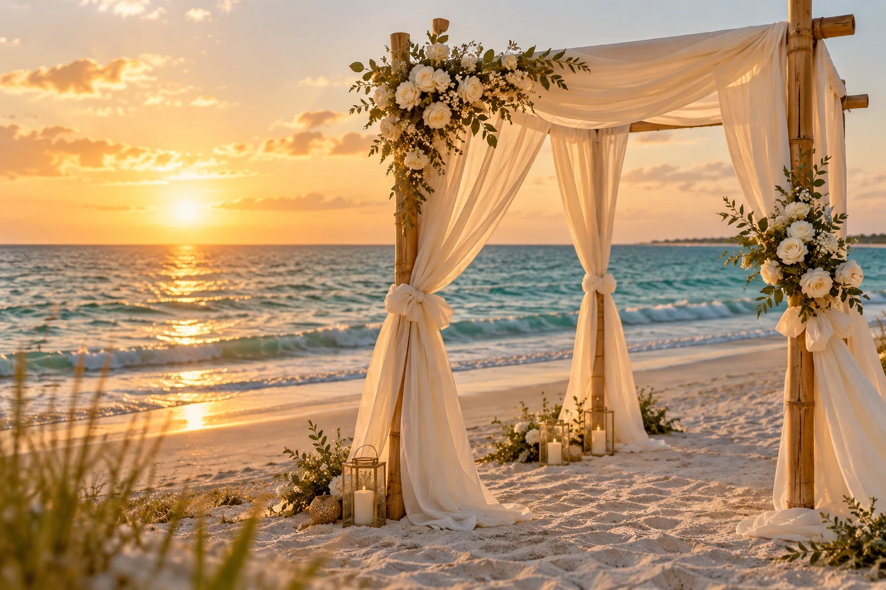

01 / BONITA SPRINGS
In-office ceremony
A simple, personal ceremony at our Bonita Springs office for couples with a valid Florida marriage license. Monday–Friday, 10 AM–4 PM by appointment.
Request office date
BONITA MULTI-SERVICES · FLORIDA WEDDINGS
An intimate ceremony in our Bonita Springs office, a celebration at your Florida venue, or practical guidance before the day. We help coordinate the ceremony, officiant and next steps around your plans.
Office · Mobile · Destination statewide · Virtual planning

A ceremony that reflects you
Choose a simple civil ceremony, a faith-inspired celebration, personalized vows or a symbolic vow renewal. Tell us what matters to you, and we will confirm the ceremony scope and an appropriately authorized officiant.
Your written quote identifies the ceremony, optional planning support, travel and any outside costs. Your officiant and date are confirmed before the booking is finalized.
Plan your ceremonyAn intimate beginning · Bonita Springs
Our Bonita Springs office offers a private setting for small, intimate ceremonies. Exchange vows close to home, with the people who matter most and a plan that keeps the day simple.
Ideal for an intimate civil wedding or elopement. Tell us your total party size, including the couple, officiant, photographer and guests; we confirm the room arrangement and permitted attendance before booking.
By appointment: Monday–Friday, 10 AM–4 PM. Ask about other times.
11100 Bonita Beach Road, Unit 108-B-1&2, Bonita Springs, FL 34135.

Office meeting-space preview. Ceremony layout, décor, access and any optional room-use arrangements are confirmed separately.
Choose your setting
We start with the couple and the setting, then confirm the license, ceremony style, timing and travel. Services are available by confirmed appointment.
01 / BONITA SPRINGS
A simple, personal ceremony at our Bonita Springs office for couples with a valid Florida marriage license. Monday–Friday, 10 AM–4 PM by appointment.
Request office date02 / WE COME TO YOU
At your home, venue, beach or agreed location anywhere in Florida. Local SWFL and statewide requests are quoted around the location, date and ceremony scope.
Check destination availability03 / FROM ANYWHERE
Meet online to plan your ceremony, review the county license steps or request help with records. For a legally binding online ceremony, ask the issuing clerk about its own virtual program.
See clerk optionsClear choices
Prices below are BMS service fees. The issuing county collects its marriage-license fee separately. We confirm scope, date, route and any optional additions before payment.
| BMS work | BMS service fee | Separate government charge |
|---|---|---|
| Office ceremony | $30 ceremony fee | Marriage license paid separately to the issuing clerk |
| Registration / application assistance | $225 optional assistance | Clerk marriage-license fee, at the current county rate |
| Assistance + office ceremony | $255 = $225 assistance + $30 ceremony | Clerk marriage-license fee remains separate |
| Local mobile ceremony | From $205 = $30 ceremony + travel from $175 | Marriage license paid separately to the issuing clerk |
| Certified-record coordination | $150 optional coordination | Certified-copy, recording or mailing charges where applicable |
The $30 office ceremony is our regulated ceremony service fee; it is not the clerk’s marriage-license fee. Government fees vary by county and eligibility. No license or government charge is included in the BMS totals above.
THE ESSENTIAL
$30
A straightforward marriage ceremony with your valid Florida license at our Bonita Springs office. No planning service is required.
InquireTHE GUIDED START
$255 BMS total
Optional standard application assistance ($225) plus an in-office ceremony ($30). The clerk issues the license and charges its own fee.
InquireWE COME TO YOU
From $205 BMS total
Ceremony ($30) plus accepted local travel from $175. For destinations beyond the local route, request a location-specific travel quote.
InquireYOUR DESTINATION
Custom quote
Discuss a custom script, extended ceremony, rehearsal or Florida destination. We itemize any optional planning and travel work separately from the ceremony.
Plan togetherA LITTLE HELP
$225
Paid, optional assistance with marriage-license registration, application information and clerk appointment coordination. You may also apply directly with the clerk without BMS assistance.
Request helpAFTER THE CEREMONY
$150
Coordination of a certified marriage-record request after recording. Pickup and delivery, when requested, are quoted separately; county record charges are separate.
Request helpAdditional application or record work, pickup and delivery, travel and optional planning are quoted and accepted separately. No mandatory assistance charge is added to the $30 office ceremony.
The path to “I do”
Apply for a Florida marriage license with any county clerk. The license can be used for a ceremony anywhere in Florida.
Tell us your date, location, preferred ceremony and whether your license is issued. We confirm availability and a written fee breakdown.
Bring your valid, effective license and identification. We perform the agreed in-person ceremony in Florida and complete the license.
The completed license goes back to the issuing clerk within 10 days. The clerk records it; a certified copy comes from the clerk or state vital records.
Before the wedding
A qualifying Florida premarital preparation course lasts at least four hours. It can help couples explore communication, conflict management, financial responsibilities and parenting.
A qualifying certificate may reduce the license fee and waive the resident waiting period. Confirm provider acceptance, certificate timing and the exact fee with your issuing clerk before enrolling.
Looking for a course? BMS offers course-provider guidance. For a qualifying completion certificate, choose an accepted provider from your issuing clerk’s registered-provider list.
Use official county information to choose a registered provider. Ask about format, availability, cost and the certificate you will need when applying.
County links & resources
Your issuing county controls application, identification, appointment, fee and virtual-program details. Use the official directory for all 67 Florida counties, or start with these nearby clerks.
Check the effective and expiration dates printed on your license; Florida licenses have a 60-day validity period. A three-day waiting period generally applies to Florida residents unless a qualifying premarital course or statutory exception applies; nonresidents are generally exempt. Confirm the exact effective date with your issuing clerk.
Our virtual service covers guidance and planning. Florida remote online notarization does not authorize a notary to solemnize a marriage remotely. Clerk virtual programs have county-specific rules; an online license appointment is distinct from a wedding ceremony.
Use official resources for certified records and name changes, and explore family resources when you need support.
Need certified-record assistance? Our optional BMS coordination fee is separate from government record, mailing and delivery charges.
Let's make a date
Share a few details and we will reply with availability, the right service and a clear quote. A request is not a confirmed booking.
Call or text
941-404-5379
Email
Admin@bonitamultiservices.com
Office
11100 Bonita Beach Road
Unit 108-B-1&2, Bonita Springs, FL 34135
Beautiful celebrations take a team
Photographers, planners, florists, venues, hair and makeup artists, musicians, caterers and other event professionals: introduce your business for consideration for Florida wedding opportunities.
Apply as a wedding providerNeed a private space for a small ceremony? Explore the Bonita Springs office, with a maximum of six people including the couple, officiant, guests and vendors. Room rental and ceremony services are quoted separately.
Explore the ceremony space